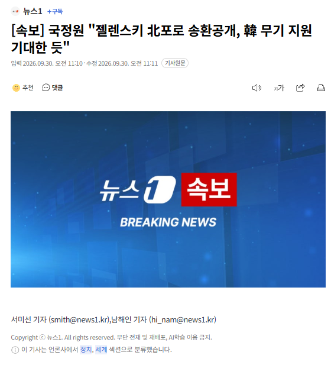

[속보] 국정원 "젤렌스키 北포로 송환공개, 韓 무기 지원 기대한 듯"
댓글
러시아한테 선빵 맞고 그 이후로 줘터지는거 안타깝긴한데
왜 적극적으로 안도와주냐고 갑자기 우리 뺨아리날리니까 좃같긴함...
힘들게 개척한 러시아 시장 다 내주고 편들어줬으면 된거지
우크라이나가 뭔데 한국이 간 쓸게 다 빼주면서 지원해야하는지ㅋㅋㅋ 심지어 한국이 유럽 당사국도 아닌데
러시아가 너네 먹으면 뭐가 달라지는데?
아니 비밀유지가 되어야 어떻게 루트 뚫어서 도와주기라도 하지. 뒤로 도와줬다가 나중에 또 저 놈 어디가서 그런 거 이야기해버리면 줄타기 외교 하는 우리만 독박 쓰게 되는데 ㅋㅋ
설마 아직도 북 남 헷갈려~?
괜히 우크 나치라고 불리는게 아니지 ㅋㅋ
외교병신 잴렌새끼 뒤지든 말든 알빠노
우맘들 빨리 쉴드쳐
이새끼들은 지들이 뭔 선한곳 대표라도 된다고 생각하고 당연하게 감내놔라 배내놔라하는게 존나 비호감임. 야스쿠니 참배 한번으로 이미 한국에 선전포고 수준으로 지랄 옘병해놓고 안준다고 옘병떠는거보면 어이가없음
저새끼들 외교를 진짜 ㅈ같이 하는듯